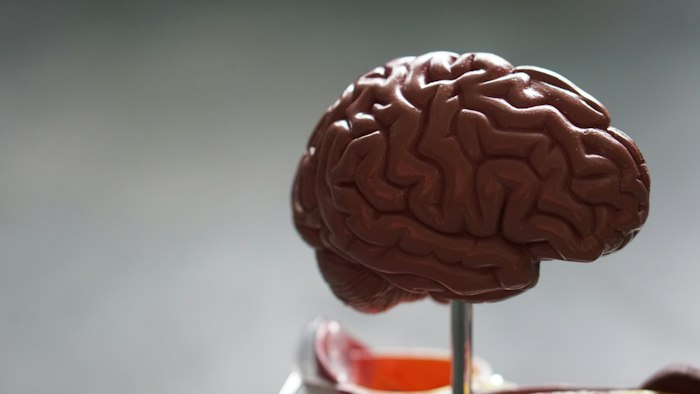

¿Qué es la conciencia digitalizada?
La conciencia digitalizada es una idea que propone crear un modelo computacional de una mente humana. Para lograrlo, sería necesario comprender con mucho detalle cómo funciona el cerebro, cómo se conectan sus neuronas y cómo se producen los recuerdos y pensamientos.
Actualmente no se puede transferir la conciencia, los recuerdos o la identidad de una persona a una computadora. Por eso, este tema combina investigaciones científicas con preguntas que todavía no tienen respuesta.

Tecnologías relacionadas
Interfaces cerebro-computadora
Estas interfaces registran algunas señales cerebrales y permiten usarlas para realizar tareas específicas, como mover un cursor o controlar una prótesis. No leen todos los pensamientos ni copian una mente.
Inteligencia artificial
La inteligencia artificial puede reconocer patrones en grandes cantidades de datos y ayudar a estudiar ciertos procesos cerebrales. Una simulación de una función no significa que una máquina tenga conciencia.
Estudio de las conexiones neuronales
Los científicos investigan cómo se conectan las neuronas. Hacer un mapa completo y entender cómo funciona el cerebro humano todavía es un gran desafío.
¿Qué es posible hoy?
Hoy existen investigaciones sobre señales cerebrales, prótesis controladas por interfaces y modelos que reconocen patrones concretos. Estos avances pueden ayudar en la medicina y la comunicación.
En cambio, copiar por completo un cerebro, transferir la identidad de una persona o comprobar que una copia digital siente son ideas hipotéticas. No son tecnologías disponibles en la actualidad.
Preguntas éticas
- Privacidad: ¿quién podría tener acceso a los datos cerebrales?
- Identidad: si se hiciera una copia digital, ¿sería la misma persona?
- Consentimiento: ¿quién podría autorizar el uso de los datos de alguien?
- Desigualdad: ¿todas las personas tendrían acceso a estas tecnologías?